Jenny and the Vampire
So this is the story of how Jenny Hargreaves went up the 17 steps to the front door of the Myrebird house in her pyjamas at midnight and asked the old woman who lived there if she was a vampire.
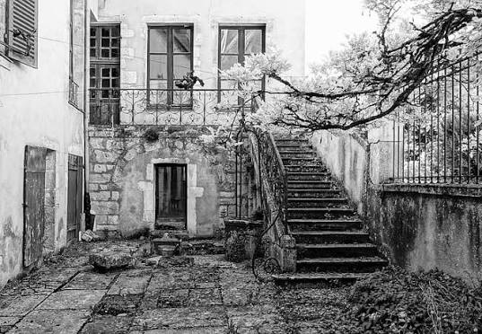
Now, at school, this Jenny Hargreaves got the nickname of "Spinning Jenny" from her friends, because she was so good at looking you in the eye and telling stories, or "spinning a yarn" as people say. Sometimes her stories were true and her facts were straight, and sometimes they were not, but everybody likes a story that is told well, even when we know that it is fabricated from start to finish. The smartest children are the ones who learn to wrap belief around a lie at the youngest age.
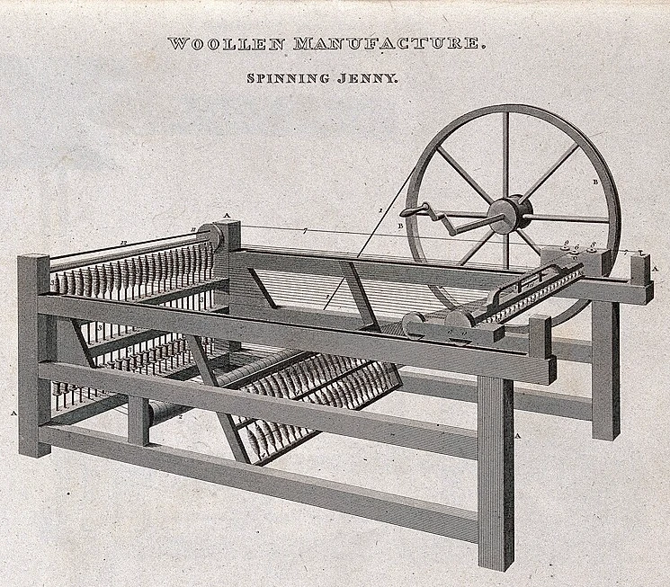
When she was older, Jenny got herself a job as a PR copywriter for Undead Online, partly because of her name and partly because of what she did that night at the Myrebird house. She was one of the best, and they gave her a magnificent party when she retired, with fireworks and a crystal decanter and 12 wine glasses, but they never inducted her, and she never guessed how close she had been to discovering the real truth of the matter.
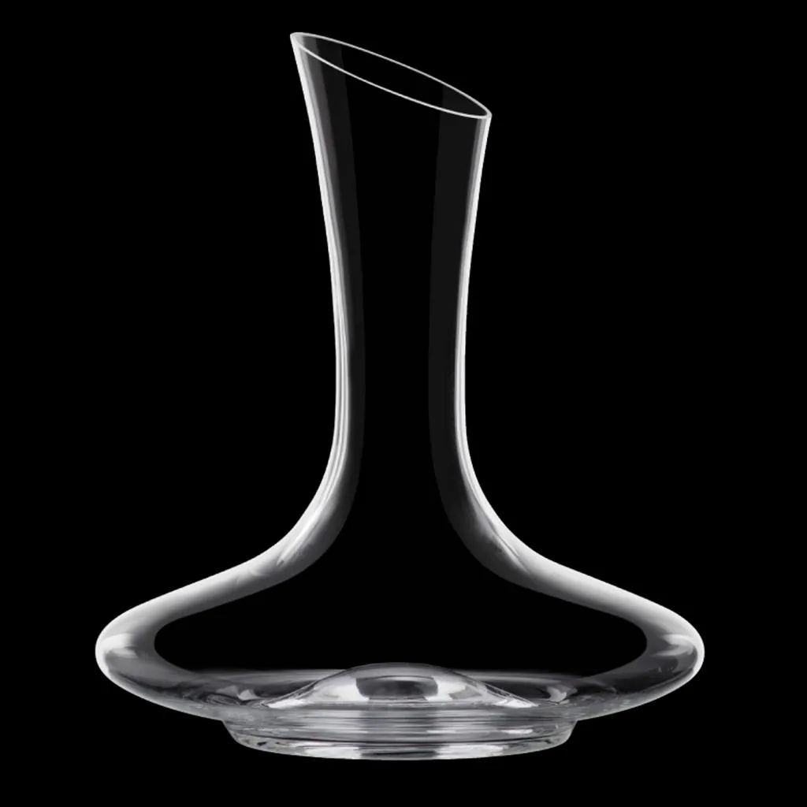
But in this story, she is still only nine years old and in her pyjamas, and it's Hallowe'en, and she is at home at a sleep-over party among her older sister's friends.
To tell the whole truth, people didn't call her "Spinning Jenny", but "Pinny", for short, and her older sister was Penelope, or Penny, and she was 12 at this time, and their baby brother was not talking yet, and they called him Pong, because babies don't always smell of roses.
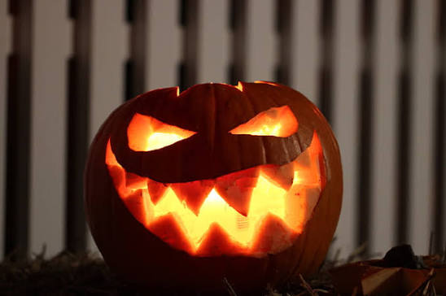
So it's late at night and there are seven girls on piles of cushions and inflatable mattresses on the floor in Penny's room and Pinny and Penny are side by side on Penny's bed, and the only light is a candle burning inside a carved pumpkin and filling the room with the smell of burnt pumpkin, and they are telling ghost stories and playing Spin the Bottle and Truth or Dare, and Pinny has just dared Penny to spread chunky peanut butter in one of Pong's clean disposable nappies, and then lick it up with her tongue, and Penny is wanting her revenge.
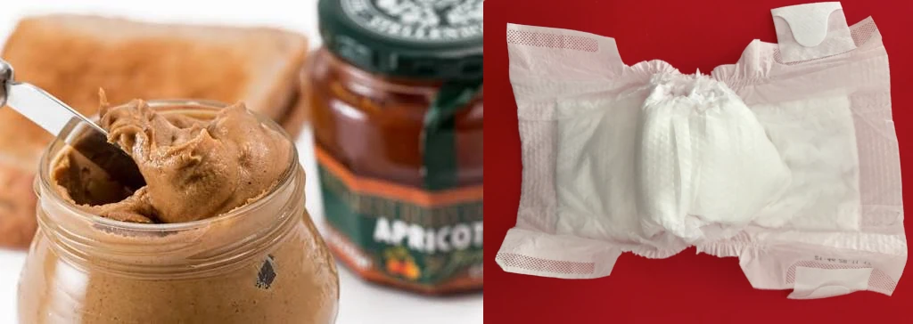
So Penny says: "Dare you go to the Myrebird house at midnight and knock on the door and ask her if she's a vampire."
"I'm in my pyjamas," Pinny told her.
"Well, you can put on your yellow rubber boots and your raincoat, and no-one will notice."
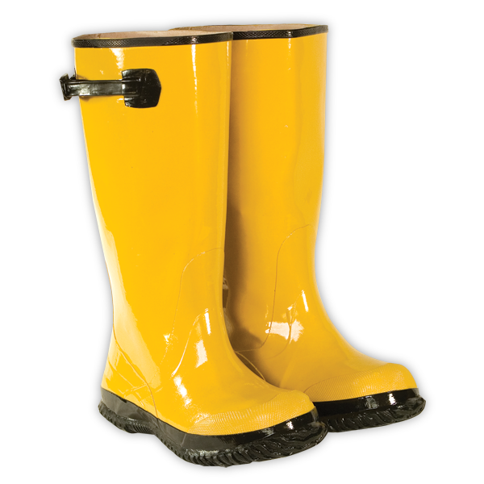
"It's dark out. I'll be cold."
"You don't dare. You'll be a chicken, Hinny Pinny, with the sky falling on your head!"
"I will not. I'll show you."
And so here's Pinny shivering in her pyjamas and yellow wellies and her raincoat at the gate of the Myrebird house, and the 17 stone steps above her leading up to the front door.
Nobody knew for sure what the old woman was called, because nobody had spoken to her yet. The house had stood empty for years after old Mrs Myrebird had died, and then one night there were lights in it again, and a woman so bent and wrinkled that you'd think someone had crumpled her up like a used shopping list and thrown her into the wastebasket. There was a man, too, an old man, but smart and spruce and straight, with his hair cut like a gentleman's, and a graciousness about him and a walking stick that he held under his arm when he adjusted his gloves. Mr Vitas, he was, and he bought things in the local shops and he was liked well enough, but the old woman never came out of the house, and you could only see her at night, a silhoueutte standing at one of the tall windows, with her hair as wild as a witch's, and no-one had the courage to ask Mr Vitas about her.
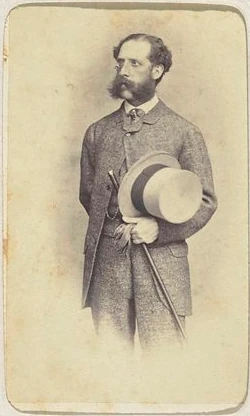
Perhaps she was Mrs Myrebird's older sister, or an aunt even. She must have been some relation, because Mr Oswald the lawyer says the house wasn't sold, and the name on the gate didn't change, and Pinny's heart is thumping nineteen to the dozen as she pushes the rusty creaking gate open and starts to climb the steps. The top edge of her yellow wellington boots digs into the back of her calves as she is climbing, and her feet are slipping about inside them, because she didn't take the time to put on her thick woollen socks.
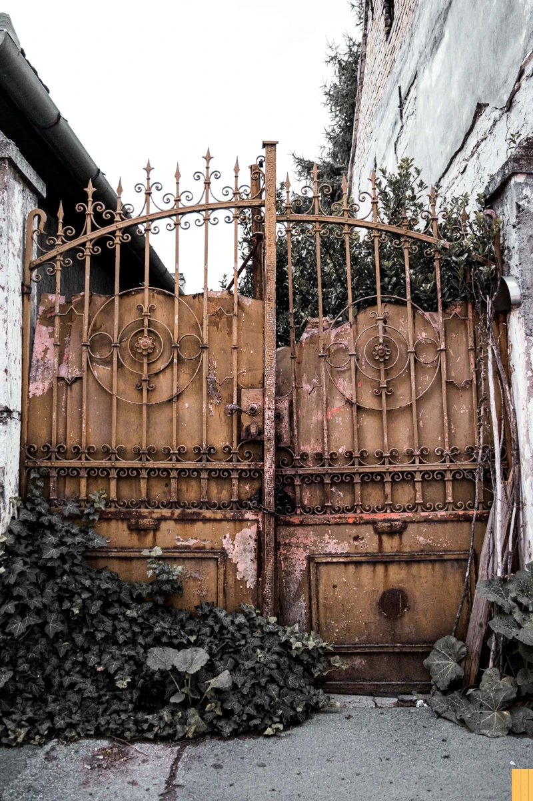
And now she is at the top where the ground is flat and covered in little grey gravel chuckies that crunch under her feet, and she turns round to look back down to make sure that she has left the gate open, in case she has to run, and there's the whole town lit up beneath her, with its orange sodium lights, and the pale yellow moonlight reflected on the water in the harbour, and the soothing sound of the waves that claw endlessly at the pebbles along the shore, but never manage to climb far up onto the land.
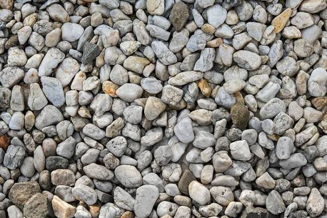
She has to wait, you see, until the bells of the church of St Apollinia (the patron saint of dentists) strikes midnight, before she can knock on the door.
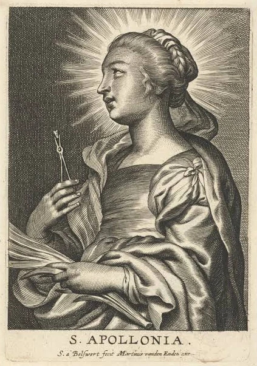
She sees that there's a doorbell she can press, but the dare says that she has to knock. So she's walking carefully across the grey gravel, not wanting to make any noise and is just about to reach the wide flagstone before the door, when the door opens and the old woman, as bent as a claw, comes out and looks down at her feet, as if expecting to see a cat waiting to come in. But there's no cat, only Pinny's yellow boots, and Pinny's heart is in her mouth and she blurts out "Are you a vampire?" and the old woman unbends just enough to look at her. Her face is white as the moonlight.
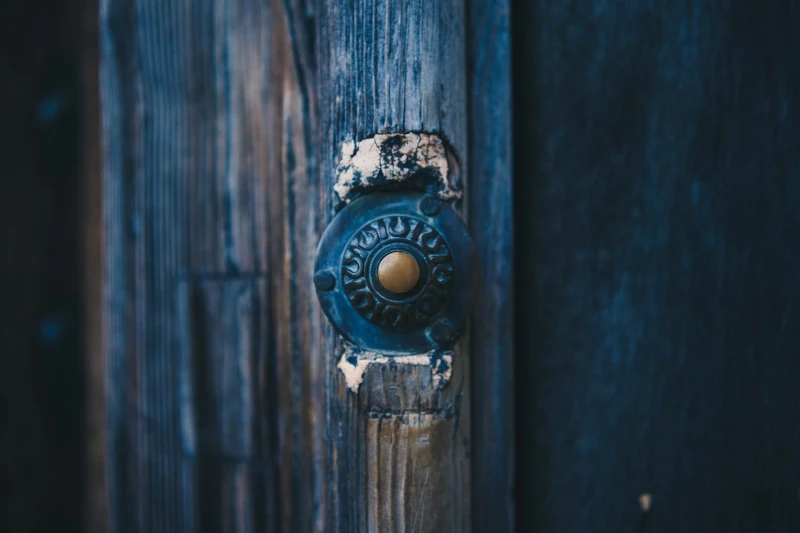
"What a question!" the old woman says, and her voice is a rich warm whisper like a wind from a distant country. "Of course, I'm a vampire. And who are you, child? You are shivering with cold. Come inside, come into the warmth."
And before she knows it, Pinny is inside the house, and the door is shut behind her, and she's in a big bright room saying that her name is Jennifer, and the old woman is wrapping a blanket around her with hands as crisp as bacon, and sitting her in front of a log fire in a huge armchair decorated with flowers that have no colour any more, and bringing her something strange and spicy and tingly to drink, and little biscuits on a plate on a tray that rattles as she walks with careful footsteps as brittle as glass. Pinny still with her raincoat and her yellow boots on.
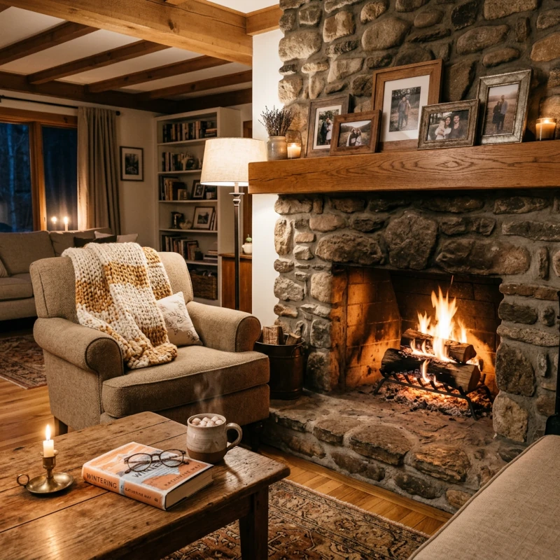
Then the vampire lady drifts towards the window like a dry leaf and sits down on a hard chair and looks out into the night. Pinny can see that from the way the light shines in them that her eyes are open, but she seems to be dreaming. So Pinny politely keeps silent, but when she has brazenly eaten a second biscuit, and has drunk the drink down to the last tingly drop, she slides off the armchair to the floor, and the blanket falls on the floor around her and she says "I should be going now."
And then she says: "Oh I'm so sorry, I didn't mean to startle you."
"Who are you, child?" the vampire lady asks her, suddenly and uncertainly on her feet again, beside her. "Do I know you? Have you come to visit me?" And then she calls out "Vitas! Vitas! Bring barley wine and flat breads! Vitas! Haven't you heard? We have guests!" and she goes out of the room and Pinny can hear her feet tottering through the house and her voice calling for Vitas.
An Abyssinian cat standing silver in the doorway.
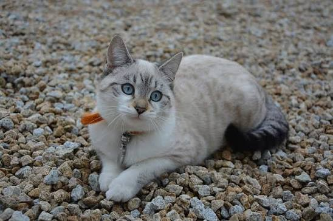
Now Pinny is running, running down the 17 steps with the frightened mouth of the big door of the big house wide left open behind her, and the rusty gate safeguardedly open in front of her, and now her feet are pounding along the pavement in her boots that are still too big for her, and she is pulling open the door of her own house, and spilling her boots on the floor behind her, and upstairs, hiding under the eiderdown in her sister's bed with the warm body of her sister beside her and her raincoat still on, shaking her head and refusing to answer any questions, and the tingly taste is still strange on her tongue.
It's only in the morning when the sun has come up and the church clock has struck seven and her mother is downstairs preparing pancakes for nine hungry girls that Pinny creeps quietly into the kitchen and hugs her mother's leg and says in a small voice: "She is a vampire. She said so."
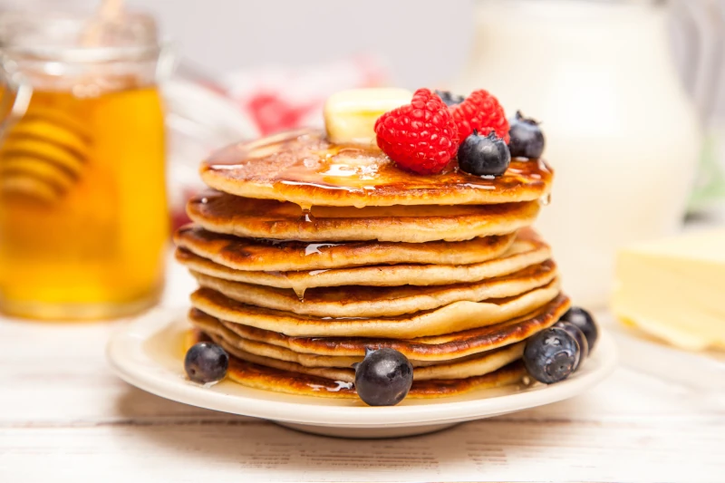
You can imagine her mother taking Pinny's raincoat off her and hanging it over the back of a chair, and sitting down, lifting Pinny onto her lap, pushing back Pinny's hair and kissing her lips against her forehead, hugging her in her arms.
You can imagine her mother saying quietly into her ear: "It's ok, Jenny, vampires don't really exist, you know. But it's such fun to believe the stories you invent, isn't it? It's fun to provoke powerful emotions, even when you know it's only peanut butter."